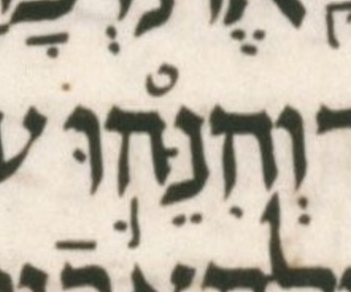

| n | 12 |
| citation:book | Jer |
| citation:c | 18 |
| citation:v | 3 |
| citation:position | 4 |
| author:name | Ben Denckla |
| author:mail | bdenckla@alum.mit.edu |
| author:confirmed | true |
| description | Note that while creating the pointed qere, the transcriber added a maqaf |
| lc:folio | Folio_ |
| lc:column | 3 |
| lc:line | 5 |
| lc:credit | Credit: Sefaria.org. |
| reftext | וְהִנֵּה־ |
| refuni | vav sheva he hiriq nun dagesh tsere he maqaf |
| changetext | וְהִנֵּה־ |
| changeuni | vav sheva he hiriq nun dagesh tsere he maqaf |
| notes:note | The qere atom at issue is part of the qere compound וְהִנֵּה־ה֛וּא. |
| notes:note-2 | The manuscript’s pointed ketiv (MPK) is וְהִנֵּה֛וּ. |
| transnotes:transnote:action | Add |
| transnotes:transnote:type | a |
| transnotes:transnote:beforetext | XXX fill me in beforetext |
| status | Pending |
| type | NoTextChange |